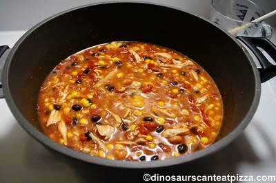

"Taco Soup" by Robyn Anderson. Licensed under CC BY-NC-ND 2.0.
Taco soup is a thick, hearty, and mildly spicy Tex-Mex dish that combines the classic flavors of beef tacos into a warm, comforting bowl of soup.